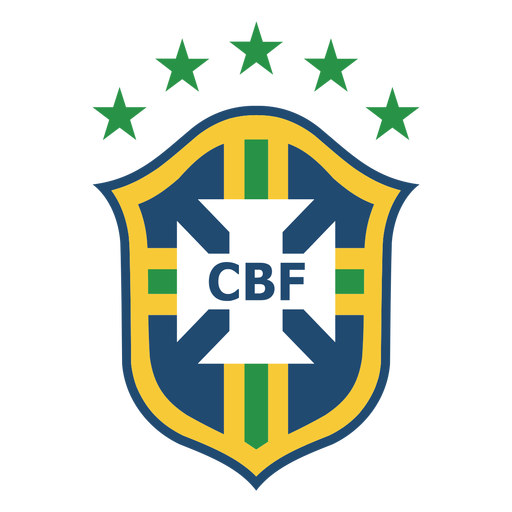
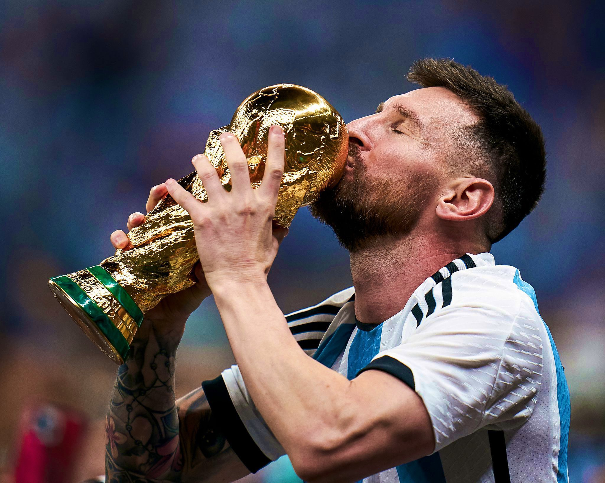

La Copa Mundial de la FIFA, fue usado por primera vez en 1974. Está hecho de oro de 18 quilates,
con una base de malaquita, y representa a dos figuras humanas sosteniendo la Tierra.
La Copa Mundial de la FIFA, fue usado por primera vez en 1974. Está hecho de oro de 18 quilates,
con una base de malaquita, y representa a dos figuras humanas sosteniendo la Tierra.
Copa Mundial de la Fifa Qatar 2022
Información general de la copa del mundo
Selecciones ganadoras
- Brasil (5)
- Alemania (4)
- Italia (4)
- Argentina (3)
- Francia (2)
- Uruguay (2)
- España (1)
- Inglaterra (1)
La Copa Mundial de la FIFA, fue usado por primera vez en 1974. Está hecho de oro de 18 quilates,
con una base de malaquita, y representa a dos figuras humanas sosteniendo la Tierra.
Distinciones individuales
Jugador con mas mundiales ganados
3 mundiales (1958-1962-1970) Pelé Jugador con mas presencias
26 apariciones Lionel Andres Messi Jugador con mas goles
16 goles Miroslav Josef Klose